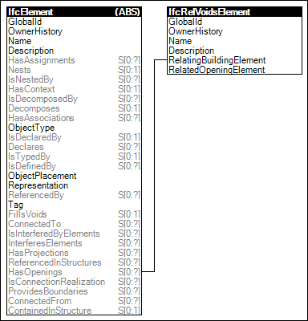

Link to this page
Link to this pageElements may have voids defined, which may be partial recess or extending full depth. Voids for openings may optionally be filled by another element such as a door or window.
Figure 23 illustrates an instance diagram.
 |
Figure 23 — Voiding |